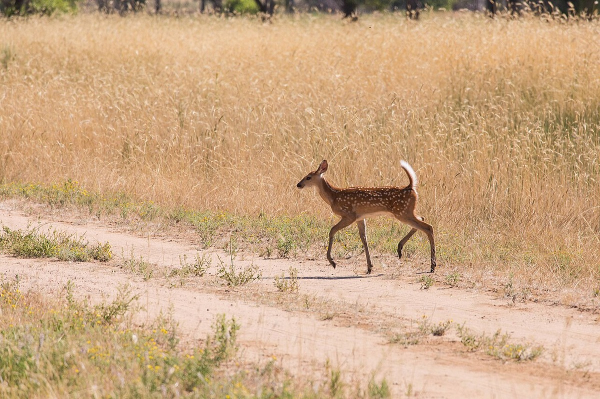

White-tailed Deer
Odocoileus virginianus (subspecies borealis in Vermont)
- Also called
- Whitetail, Northern white-tailed deer
- Kind
- mammal · Cervidae
- Native to Vermont
- yes
- Legal status
- Game species under regulated hunting seasons; winter feeding of deer is illegal in Vermont (Landowner's Guide). Deer wintering areas are mapped and considered in Act 250 review. (checked 2026-10-30)
Pictures

Names
White-tailed deer. The Vermont subspecies is the northern white-tailed deer (Odocoileus virginianus borealis). One of five members of the deer family in North America (with mule deer, elk, caribou and moose).
Range and habitat
Statewide and adaptable. Numbers are highest where large woodlots mix with farm openings (a forest-edge species), lower in the large forests of the Green Mountains and Northeast Kingdom. The average home range is about one square mile. In the north, deer yards (winter cover in stands of mature softwood) are critical: deer may travel 10 to 15 miles to reach one and return to the same yard each year. Wintering areas range from about 10 acres to several thousand and make up less than 10 percent of the forest (the species page says 7 to 8 percent). The best trees, in descending order, are eastern hemlock, northern white cedar, red and white spruce, balsam fir and white pine, 35 to more than 75 feet tall.
How to identify (by season; look-alikes and the key difference)
The sources read do not describe the animal's appearance. Identification on the land is by sign (below). Whether fawns are born spotted is not stated in the sources read.
Through the year
Dates are typical for Vermont and shift with elevation and year; "approximate" means the source gave a season and the dates are a translation of it.
| When | What | Look for | What to do | Dates |
|---|---|---|---|---|
| May 15 to Jul 5 | young (watch) | Fawns are born from mid-May to early July and can walk at birth; fawning cover is tall grass or shrubby cover. | - | stated |
| Sep 15 to Nov 15 | mast (watch) | In autumn deer feed on beechnuts, acorns, apples and other fruit to build fat for winter; beech and oak stands matter. | - | approximate |
| Nov 1 to Dec 15 | rut (watch) | Mating season (early November to mid-December in the Landowner's Guide; October to December on the Fish & Wildlife page). | - | stated |
| Dec 1 to Apr 15 | yarding (watch) | The critical wintering period when snows are deep. In a deer yard look for browsed twigs on young trees (compressed, bushy stems), scarring on the stems of young trees and concentrations of pellets; after a few weeks with more than 18 inches of snow, winter trails, concentrated pellets and beds show. | Inspect possible yards after an extended period of deep snow. | stated |
| Dec 1 to Apr 15 | yarding (avoid) | Deer in winter yards burn scarce energy when disturbed: keep dogs from roaming free through deer yards, report dogs chasing deer to the game wardens, and do not feed deer (illegal, and it can kill them). | - | stated |
Signs on the land (tracks, scat, browse, nests, holes, calls)
- Winter browse: twigs of young trees with a compressed, bushy look; scarring on the stems of young trees; concentrations of pellets.
- In deep snow (after weeks with more than 18 inches): winter trails, concentrated pellets and beds.
- Tracks are not described in the sources read.
Role in the forest (what it eats, what eats it, what it needs)
A ruminant that eats more than 600 foods. Spring and summer: forbs, leaves, twigs and crops such as alfalfa and oats. Fall: acorns, nuts, mushrooms, apples and other fruit to build fat. Winter: buds of small trees and shrubs and the needles of cedar, hemlock and, less, fir, a diet that does not meet its energy needs, so deer depend on fat reserves, cut their movement and go into a state of semi-hibernation. Maple, ash and birch twigs and leaves are key foods.
What helps it thrive (light, soil, shelter, food and the trees it uses)
- A mosaic of fields and forest. The Guide says the best deer habitat is a landscape mosaic of fields and forests; a deer's home range is about one square mile (640 acres) and must hold all the conditions it needs.
- Winter shelter, the single most important type. From about December 1 to April 15, when snow is deep, deer need a wintering area (a 'deer yard'): stands of mature softwood trees with large contiguous crowns, from about 10 acres to several thousand acres, which are less than 10 percent of Vermont's forest. In descending order of value the trees are eastern hemlock, northern white-cedar, red and white spruce, balsam fir and white pine; preferred trees are 35 to more than 75 feet tall and 6 to 20 inches across (Eastern Hemlock, Northern White-cedar, Red Spruce, Balsam Fir, White Pine). The best yards give little food, because little light reaches the floor, so deer eat their fat reserves and the browse near the yard.
- Food in other seasons: shoots and leaves, farm crops, and mast such as beechnuts, acorns and apples; more than 600 foods are known. In winter they eat coarse woody browse.
- What not to do: feeding deer in winter is illegal in Vermont and frequently kills them, because they have evolved to eat coarse woody browse in winter; people and dogs moving through a yard make deer spend energy they cannot spare.
- For a landowner: first find out whether your land has a deer yard (browsed, bushy young trees, pellet concentrations and, after a few weeks with more than 18 inches of snow, trails and beds; maps are available from town clerks, regional planning commissions and the Agency of Natural Resources Atlas) and coordinate with neighbors, because the range is larger than most parcels.
Managing for it (habitat practices) and living with it (conflicts and damage)
- Find out if you have a yard: deer yard maps are available from town clerks, regional planning commissions and the Fish & Wildlife Department, and digital maps are on the ANR Natural Resources Atlas (Vermont Tools and Resources).
- Winter cover: keep mature softwood with large, vigorous crowns and 70 to 90 percent winter canopy closure. Keep at least 50 percent functional cover in a yard at all times. Uneven-age management with group selection cuts of 0.25 to 2 acres, stand entry every 10 to 20 years (maturity ages: about 60 years for fir stands, 80 to 100 for spruce, more than 100 for hemlock). Shelterwood is more reliable than clearcutting for yards over 200 acres; clearcutting is the least preferred. In a two-stage shelterwood, make the first cut in late summer and the second in winter; log in winter over 15 inches of snow to protect regeneration. Do not fragment narrow yards; keep travel lanes at least 200 feet wide.
- Hemlock gives superior cover (lives up to 600 years) but is hard to regenerate in yards; the Guide advises not harvesting hemlock stands there and managing browse in adjacent hardwoods. See also Hemlock Woolly Adelgid.
- Food: small patch cuts in or next to yards, tops and sucker growth from logging, releasing apples; in other seasons, small clearcuts under 1 acre, irregular cuts under 200 feet wide, small herbaceous openings mowed every 3 years, and mast: beech and oak begin producing nuts at about age 50 and bear every 3 to 5 years for up to 150 years.
- Overabundance harms habitat and forest regeneration, raises deer-vehicle collisions and crop and garden losses, and is linked to Lyme disease. Where deer are overabundant, regeneration of white ash, red oak and maples may fail; large clearcuts can overwhelm browse so some seedlings escape. Landowner habitat work needs to be paired with willingness to take antlerless deer, the Guide says.
- Never feed deer in winter.
Legal status
Regulated hunting seasons each fall; the 2020-2030 Big Game Management Plan sets population objectives. Winter feeding is illegal. Act 250 review protects 1,000 to 2,000 acres of deer wintering areas a year, but most development and harvesting on private land is exempt from Act 250.
Sources
- Vermont Fish & Wildlife Department, white-tailed deer: https://vtfishandwildlife.com/learn-more/vermont-critters/mammals/white-tailed-deer (read 2026-10-30)
- Vermont Fish & Wildlife Department, A Landowner's Guide (complete PDF): https://vtfishandwildlife.com/sites/fishandwildlife/files/documents/Learn%20More/LandownersGuide/Landowner-Guide-Complete.pdf (chapters 8 and 18 read 2026-10-30)
- Vermont Fish & Wildlife Department, A Landowner's Guide, Wildlife Habitat Management for Lands in Vermont, chapter 18 (White-tailed Deer): https://vtfishandwildlife.com/sites/fishandwildlife/files/documents/Learn%20More/LandownersGuide/Landowner-Guide-Complete.pdf (read as text 2026-11-01)
What this page is based on
Kind of source: primary-agency (Vermont Fish & Wildlife species page and the department's Landowner's Guide, read as text)
What was read: The Vermont Fish & Wildlife white-tailed deer page (summarizing fetch, 2026-10-30; no description, tracks or sign, no antler cycle, no fawning month, no last-updated date) and the white-tailed deer and deer wintering chapters of the department's A Landowner's Guide (the 144-page PDF read as text; it cites the 2010-2020 Big Game Management Plan, so it is older than the 2020-2030 plan the species page cites). Tracks and the appearance of the animal are not recorded here. The 'mast' window translates 'in autumn'. The Management Guide for Deer Wintering Areas in Vermont, which the Guide cites, was not read. Habitat needs added 2026-11-01 from chapter 18 of the Vermont Fish and Wildlife Landowner's Guide (read as text).
Last checked: 2026-10-30
Vermont land and forest reference, built 2026-11-05. Rules and dates here are summaries, not legal advice; dates shift with elevation and year. Photo and recording credits · Note: _reference/US-VT/Species/White-tailed Deer.md